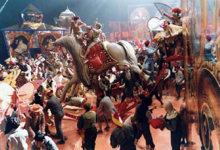
Τι μαθαίνουμε από το σινεμά :
Ο αρχηγός της αστυνομίας δίνει πάντα 48 ώρες προθεσμία.
Μπορείς να προσγειώσεις ένα τζάμπο αρκεί να σου μιλά κάποιος από κάτω.
Ο άντρας δεν αισθάνεται πόνο απ τις σφαίρες που τρώει παρά μόνο όταν κάποια γκόμενα του πλένει την πληγή.
Το σύστημα εξαερισμού είναι καλή κρυψώνα και σε πάει όπου θες.
Όλες οι βόμβες είναι ωρολογιακές με μεγάλα κόκκινα νούμερα για να ξέρεις πότε θα εκραγούν.
Τα σεντόνια όλα έχουν σχήμα L φθάνουν πάνω απ τα στήθη μιας γυναίκας και μέχρι την μέση του άντρα.
Πάντοτε υπάρχει χώρος να παρκάρεις εκεί που πας.
Όλοι όσοι ξυπνούν από εφιάλτη είναι ιδρωμένοι.
Τα κραγιόν και τα μέικ απ παραμένουν ακόμη και σε κατάδυση για ψαροντούφεκο.
Δεν έχει σημασία με πόσους θα τα βάλεις έτσι κι αλλιώς οι αντίπαλοι έρχονται ένας - ένας.
Όλα τα αυτοκίνητα που τρακάρουν εκρύγνηνται και τυλίγονται στις φλόγες.
Όλες οι κλειδαριές ανοίγουν με μια πιστωτική εκτός αν το σπίτι καίγεται και υπάρχει ένα παιδί μέσα.
Είναι πολύ πιθανό να γλιτώσεις από μία μάχη εκτός αν πεις πως πεθύμησες την οικογένεια σου.
Τα βράδια οι κουζίνες δεν έχουν φως παρά μόνο αυτό του ψυγείου.
Τα εξάσφαιρα πιστόλια πολλές φορές ρίχνουν έως και 75 σφαίρες με ένα γέμισμα.
Όλοι οι αστυνομικοί ντετέκτιβ συχνάζουν σε στριπτιτζάδικα.
Όσο ξύλο και αν φας ακόμη κι αν σε σαπίσουν στις γροθιές θα την γλιτώσεις με λίγο αίμα απ το στόμα.
| |
Όλα είναι αστεία αρκεί να συμβαίνουν σε κάποιον άλλο.
Will Rogers
| |
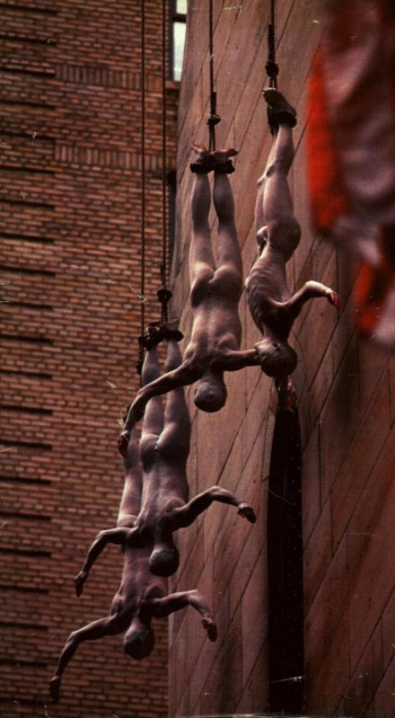
Όταν έχουμε να διαλέξουμε ανάμεσα σε μία μεγάλη θυσία και σε μία μικρή προτιμάμε να κάνουμε την πρώτη : Γιατί στη μεγάλη θυσία αποζημιωνόμαστε με τον αυτοθαυμασμό, κάτι που δεν είναι δυνατόν στη μικρή θυσία.
Νίτσε
[download mp3: scattered_order] | |
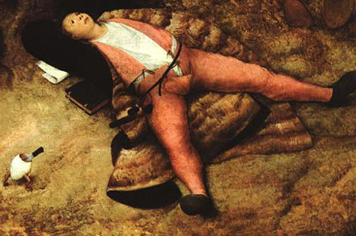
Τι ζωή θα είναι αυτή - και να αξίζει να την πεις ζωή – αν από μέσα της λείπει η ηδονή ; Ακόμη και οι σπουδαίοι μας οι στωικοί δεν την περιφρονούν καθόλου την απόλαυση. Ναι κρύβονται προσεκτικά και με αλαλαγμούς της σέρνουν τα μύρια όσα, και την ξεσκίζουνε μπρος στον κόσμο, μα όλα τούτα είναι για να διώξουν τους άλλους και να την απολαύσουν με το ραχάτι τους.
Ποια ώρα της ζωής δεν θα ήταν θλιβερή, πληχτική, άχαρη, αποκρουστική, άνοστη, ανυπόφορη, αν δεν της βάζαμε την ηδονή και τη νοστιμιά της τρέλας.
Έρασμος
[download mp3: roberta_flack] | |
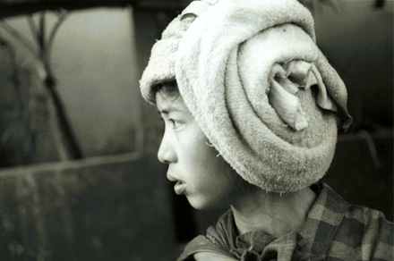
Αντίο είπε η αλεπού.
Να το μυστικό μου:
Μόνο με τη καρδιά βλέπεις καθαρά, την ουσία δεν την βλέπουν τα μάτια.
Αντουάν Ντέ Σαίν Εξιπερύ
[download mp3: nino_rota] | |
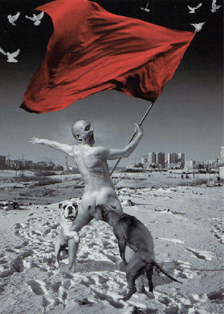
Οι ανεμόμυλοι πληθαίνουν οι Δον Κιχώτες λιγοστεύουν.
Φόρμπατ
[download mp3: faust] | |
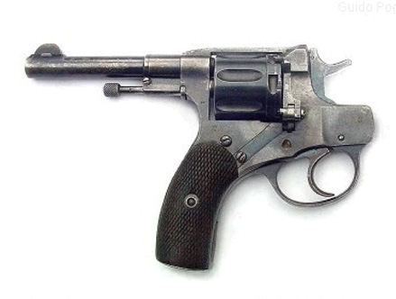
Οι lost bodies παρουσιάζουν τη νέα τους κολεξιόν - για τις ένοπλες δυνάμεις - για τη σαιζόν (φθινόπωρο 2006 - χειμώνας 2007). Αν το είχαμε σκεφτεί νωρίτερα θα είχαμε γλιτώσει απο πολλούς μαλάκες. | |
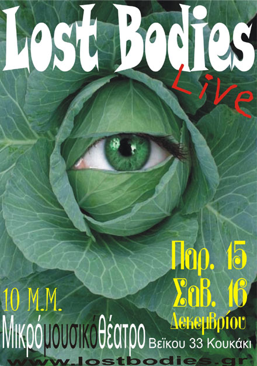
Και μόνο.... με 8 eu !!!! | |
Σε τι διαφέρει το ναι από το όχι ;
Σε τι διαφέρει το καλό από το κακό ;
Γιατί να φοβάμαι ότι φοβούνται οι άλλοι ;
Μερικοί βρίσκουν χαρά γιορτάζοντας τη θυσία του βοδιού.
Άλλοι, την άνοιξη, πάνε στον κήπο και ανεβαίνουν στις βεράντες.
Μόνο εγώ βολοδέρνω μοναχός, μη ξέροντας που στέκω.
Σα νεογέννητο μωρό προτού μάθει να χαμογελά.
Είμαι μόνος χωρίς να έχω πουθενά να πάω.
Άλλοι έχουν πιότερα από όσα χρειάζονται, μόνο εγώ δεν έχω τίποτα˙ είμαι λειψός. Ά, βέβαια ! Τα έχω μπερδέψει.
Άλλοι αστράφτουν και είναι σαφείς.
Μόνο εγώ είμαι θολός και ανίσχυρος.
Άλλοι είναι έξυπνοι, τα καταφέρνουν όλα.
Μόνο εγώ είμαι βαρύς και βλάκας.
Ω ! σαν τα κύματα του πελάγου παρασέρνομαι.
Δίχως κατεύθυνση, σαν ανήσυχος άνεμος.
Πολυάσχολοι όλοι οι άλλοι.
Μόνο εγώ, άσκοπος και καταπτοημένος.
Είμαι διαφορετικός.
Με τρέφει η μεγάλη μάνα.
Λάο Τσέ
[download mp3: samuel_barber] | |
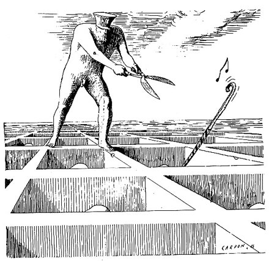
Αν εσείς ειλικρινώς συγχωριανοί μου
με επιδοκιμάζατε όταν έκλεινα τα καπηλειά και απαγόρευα τα χαρτοπαίγνια, και έσερνα τη γριά Φράιζερ στον ειρηνοδίκη˙
και τόσα άλλα θα θυμάστε.
Γιατί τώρα αφήνετε τη Ντόρα, τη κόρη της μοδίστρας, και τον ηλίθιο γιό του Βενιαμίν Ποντιέ,
τη νύχτα να μεταβάλουν τον τάφο μου σε ακατονόμαστο κρεβάτι ;
Έντγκαρ Λή Μάστερ
[download mp3: killdozer] | |

Δες με τη φαντασία σου ανθρώπους που κατοικούν μέσα σε μια σπηλιά κάτω από τη γη, που έχει την είσοδό της ψηλά στην οροφή, προς το φως. Και μέσα στη σπηλιά να είναι άνθρωποι αλυσοδεμένοι στα πόδια και στον αυχένα από την παιδική τους ηλικία, έτσι ώστε να είναι καρφωμένοι στο ίδιο σημείο και να μπορούν να βλέπουν μόνο μπροστά τους και να μην είναι σε θέση, εξαιτίας των δεσμών, να στρέφουν τα κεφάλια τους ολόγυρα. Κι οι ανταύγειες της φωτιάς που καίει πίσω τους να είναι πάνω και μακριά από αυτούς. Και ανάμεσα στη φωτιά και στους δεσμώτες, προς τα πάνω, να υπάρχει ένας δρόμος που στο πλάι του να είναι χτισμένο ένα τοιχάκι, όπως τα παραπετάσματα που τοποθετούν οι θαυματοποιοί, και πάνω απ' αυτά επιδεικνύουν τα ταχυδακτυλουργικά τους.
- Βλέπω, είπε.
Φαντάσου λοιπόν κοντά σε τούτο το τοιχάκι, ανθρώπους να μεταφέρουν αντικείμενα κάθε είδους, που προεξέχουν από το τοιχάκι, καθώς και ανδριάντες και κάποια άλλα αγάλματα ζώων, πέτρινα και ξύλινα και κατασκευασμένα με κάθε είδους υλικό, και, όπως είναι φυσικό, από αυτούς που τα μεταφέρουν άλλοι μιλούν και άλλοι μένουν σιωπηλοί.
- Παράδοξη εικόνα περιγράφεις, και παράδοξους δεσμώτες, είπε.
Μα είναι όμοιοι με μας, και πρώτα και κύρια, νομίζεις πως αυτοί έχουν δει κάτι άλλο από τους εαυτούς τους και τους υπόλοιπους που είναι μαζί, εκτός από τις σκιές που δημιουργεί η φωτιά, και των αντανακλάσεών της στους απέναντι τοίχους ;
- Μα πως είναι δυνατόν, είπε, αφού είναι αναγκασμένοι να κρατάνε ακίνητα τα κεφάλια τους εφ' όρου ζωής ;
Κι από αυτά που μεταφέρονται ; Δεν θα έχουν δει ακριβώς το ίδιο;
Τι άλλο;
Κι αν θα μπορούσαν να συνομιλούν μεταξύ τους, δεν νομίζεις πως σ' αυτά που βλέπουν θεωρούν πως αναφέρονται οι ονομασίες που δίνουν;
Αναγκαστικά.
Τι θα συνέβαινε, αν το δεσμωτήριο τους έστελνε αντίλαλο από τον απέναντι τοίχο, κάθε φορά που κάποιος από τους περαστικούς μιλούσε, νομίζεις πως θα θεωρούσαν πως αυτός που μιλάει είναι τίποτε άλλο από τη φευγαλέα σκιά;
- Μα το Δία, όχι βέβαια, είπε.
Και σε κάθε περίπτωση, αυτοί δεν θα θεωρούν τίποτα άλλο σαν αληθινό, παρά τις σκιές των αντικειμένων.
- Απόλυτα σίγουρο, είπε.
Σκέψου όμως, είπα εγώ, ποια θα μπορούσε να είναι η λύτρωσή τους και η θεραπεία τους και από τα δεσμά κι από την αφροσύνη, αν τους συνέβαιναν τα εξής : Αν κάθε φορά, δηλαδή, που θα λυνόταν κάποιος και θ' αναγκαζόταν ξαφνικά να σταθεί και να βαδίσει και να γυρίσει τον αυχένα του και να δει προς το φως, κι όλ' αυτά θα τα έκανε με μεγάλους πόνους και μέσα από τα λαμπυρίσματα δεν θα μπορούσε να διακρίνει εκείνα, που μέχρι τότε έβλεπε τις σκιές τους, τι νομίζεις πως θ' απαντούσε αυτός, αν κάποιος του έλεγε πως τότε έβλεπε φλυαρίες, ενώ τώρα είναι κάπως πιο κοντά και πως έχει στραφεί προς όντα πραγματικά και βλέπει με σωστότερο τρόπο, και αν του έδειχνε το καθένα από αυτά που περνούσαν, ρωτώντας τον τι είναι και αναγκάζοντάς τον ν' αποκριθεί, δεν νομίζεις πως αυτός θ' απορούσε και θα νόμιζε πως αυτά που έβλεπε τότε ήταν πιο αληθινά από τα τωρινά που του δείχνουν;
- Και πολύ μάλιστα, είπε.
Κι αν λοιπόν τον ανάγκαζε να βλέπει προς το ίδιο το φως, δεν θα πονούσαν τα μάτια του και δεν θα έφευγε για να ξαναγυρίσει σ' εκείνα που μπορεί να δει καλά, και δεν θα νόμιζε πως εκείνα στην πραγματικότητα είναι πιο ευκρινή από αυτά που του δείχνουν;
- Έτσι, είπε.
Και αν, τον τραβούσε κανείς με τη βία από εκεί, μέσα από ένα δρόμο κακοτράχαλο κι ανηφορικό, έξω στο φως του ήλιου, δεν θα υπέφερε τάχα και δεν θα αγανακτούσε όταν τον έπαιρναν, κι αφού θα έφτανε στο φως, δεν θα πλημμύριζαν τα μάτια του από τη λάμψη και δεν θα του ήταν αδύνατο να δει ακόμα κι ένα απ' αυτά που τώρα ονομάζονται αληθινά;
- Όχι βέβαια, δεν θα μπορούσε έτσι ξαφνικά, είπε.
Έχω την εντύπωση πως θα χρειαζόταν να συνηθίσει, αν σκοπεύει να δει τα πράγματα που είναι πάνω. Και στην αρχή θα μπορούσε πολύ εύκολα να διακρίνει καλά τις σκιές, και μετά απ' αυτό, πάνω στην επιφάνεια του νερού τα είδωλα των ανθρώπων και των άλλων πραγμάτων, και κατόπιν αυτά τα ίδια. Και μετά από αυτά, τ' αντικείμενα που είναι στον ουρανό και τον ίδιο τον ουρανό θα μπορούσε να δει ευκολότερα τη νύχτα, βλέποντας το φως των άστρων και της σελήνης, παρά στη διάρκεια της μέρας, τον ήλιο και το ηλιόφως.
- Πως όχι;
Τελευταίο θα μπορούσε νομίζω να δει τον ήλιο, όχι στην επιφάνεια του νερού ούτε σε κάποια διαφορετική θέση τα είδωλά του, αλλά θα μπορούσε να δει καλά τον ήλιο καθαυτό στο δικό του τόπο και να παρατηρήσει προσεκτικά τι είδους είναι.
- Κατ' ανάγκη, είπε.
Και μετά θα συλλογιζόταν τότε για κείνον, πως αυτός είναι που ρυθμίζει τις εποχές και τους χρόνους και που κανονίζει τα πάντα στον ορατό κόσμο, καθώς και ο αίτιος, κατά κάποιο τρόπο, όλων εκείνων που έβλεπαν αυτοί.
- Είναι φανερό, είπε, πως αυτά θα συμπεράνει ύστερα από τα προηγούμενα.
Τι λες λοιπόν; Όταν αναλογίζεται την πρώτη του κατοικία και την εκεί σοφία που είχε αυτός και οι τότε συνδεσμώτες του, δεν νομίζεις πως θα καλοτυχίζει τον εαυτό του για τούτη την αλλαγή και θα οικτίρει τους άλλους;
- Και πολύ μάλιστα.
Κι αν υπήρχαν μεταξύ τους τότε κάποιες τιμές και έπαινοι και βραβεία γι' αυτόν που θα μπορούσε να διακρίνει πιο καθαρά αυτά που περνούσαν μπροστά από τα μάτια του και γι' αυτόν που θα μπορούσε να θυμηθεί περισσότερο ποια συνήθως περνούσαν πρώτα, ποια μετά και ποια ταυτόχρονα, και έτσι θα μπορεί να προβλέπει τι θα έρθει στο μέλλον, νομίζεις πως αυτός θα κατεχόταν από σφοδρή επιθυμία και θα ζήλευε τους τιμημένους από κείνους και τους μεταξύ εκείνων κυρίαρχους ή θα είχε πάθει αυτό που λέει ο Όμηρος, και πολύ θα επιθυμούσε "να ήταν ζωντανός στη γη κι ας δούλευε για άλλον, που είναι ο φτωχότερος" και θα προτιμούσε να έχει πάθει τα πάντα, παρά να νομίζει εκείνα που νόμιζε και να ζει έτσι εκεί;
- Έτσι νομίζω τουλάχιστον, είπε, πως θα προτιμούσε να πάθει οτιδήποτε παρά να ζει έτσι.
Και τώρα βάλε στο μυαλό σου το εξής, είπα εγώ. Αν κατέβει αυτός πάλι και καθίσει στον ίδιο θρόνο, δεν θα ξαναγεμίσουν τάχα τα μάτια του σκοτάδι, αφού ήρθε ξαφνικά από τον ήλιο;
- Και πολύ μάλιστα, είπε.
Αν χρειαζόταν ν' ανταγωνιστεί με κείνους τους παντοτινούς δεσμώτες, λέγοντας την άποψή του σχετικά με τις σκιές, καθόσον χρόνο η όρασή του είναι αμβλεία, πριν προσαρμοστούν τα μάτια του, και για να συνηθίσουν δεν θα χρειαζόταν και τόσο μικρός χρόνος, άραγε δεν θα προκαλούσε περιπαιχτικά γέλια και δεν θα έλεγαν γι' αυτόν πως με το ν' ανεβεί επάνω, γύρισε με καταστραμμένα τα μάτια του και πως δεν αξίζει ούτε να προσπαθήσουν καν να πάνε επάνω; Και αυτόν που θα επιχειρήσει να τους λύσει και να τους ανεβάσει, αν τους δινόταν κάπως η ευκαιρία να τον πιάσουν και να τον σκοτώσουν, δεν θα τον σκότωναν;
Πλάτωνας, Πολιτεία, Βιβλίο Έβδομο
[download mp3: terre_thaemlitz] | |
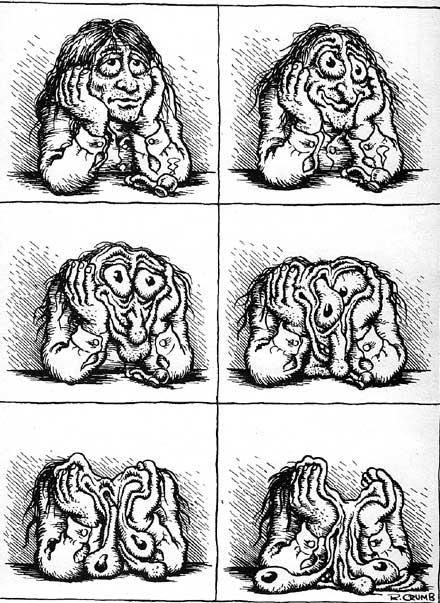
Είναι απαίτηση της φύσης να «μεθάει» πότε - πότε ο άνθρωπος χωρίς να αποκοιμιέται ˙ γι αυτό και η απόλαυση από τον καπνό, το οινόπνευμα, τα ναρκωτικά.
Γκαίτε
[download mp3: come] | |
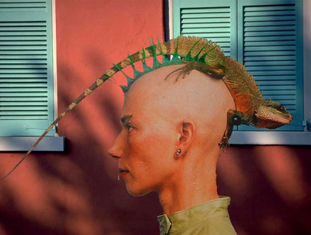
Ο χαμελαίων που λένε ότι τρέφεται με αέρα μόνο, έχει, σε σχέση με όλα τα άλλα ζώα, την ποιο ευκίνητη γλώσσα.
Τζόναθαν Σουίφτ
[download mp3: flogging_molly] | |
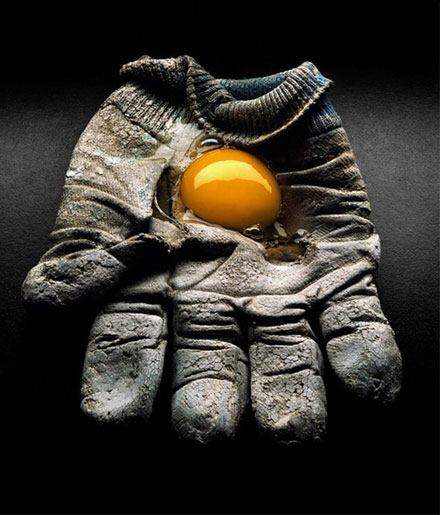
Μια έκτακτη-εφήμερη εμφάνιση κάποιων χαμένων κορμιών στη καταλήψη στο Λύκειο Εξαρχείων, πάνω από την Ιπποκράτους, σήμερα Σάββατο το βράδυ (κατά τις 23.00).
| |
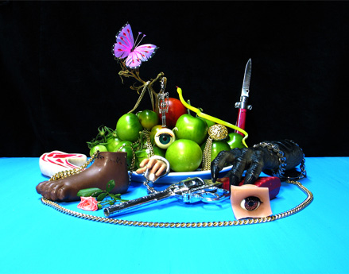
-Έχω γλώσσα μοσχαριού, χοιρινό κεφάλι, συκώτι αρνίσιο….
-Δεν ήρθα εδώ για να ακούσω τα προβλήματά σου, φέρε μου τον κατάλογο να παραγγείλω.
Δεν σερβίρουμε γυναίκες.
Πρέπει να φέρεται τις δικές σας.
- Γκαρσόν μια μύγα μέσα στη σούπα μου.
- Μη φωνάζετε κύριε, θα θέλουν και οι άλλοι.
Παρακαλώ τα σκουπίδια μέσα στον κάδο να κάνουν ησυχία.
Μου αρέσει πολύ το κεφαλάκι.
Σαλώμη
Δοκιμάστε την καπνιστή σαλμονέλα.
[download mp3: richard_formby] | |
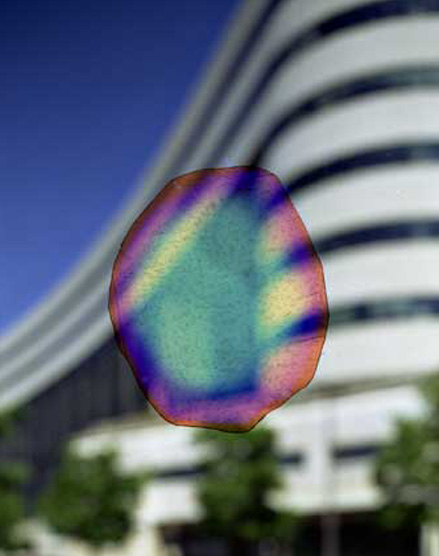
Προοίμιο στις οδηγίες για το κούρδισμα του ρολογιού.
Σκέψου αυτό: όταν σου κάνουν δώρο ένα ρολόι, σου κάνουν δώρο μία ανθισμένη κόλαση, μια αλυσίδα από τριαντάφυλλα, ένα μπουντρούμι γεμάτο αέρα. Δεν σού δίνουν μόνο ένα ρολόι, «να ζήσεις ευτυχισμένος και ελπίζουμε να βγει καλό γιατί είναι καλή μάρκα, ελβετικό, με άξονα από ρουμπίνια», δεν σου κάνουν δώρο μόνο αυτό το μικροσκοπικό λιθοξόο που θα δέσεις στο καρπό σου και θα περιφέρεις μαζί σου. Σου κάνουν δώρο – δεν το ξέρουν, το τρομερό είναι ότι δεν το ξέρουν – σου κάνουν δώρο ένα καινούργιο, εύθραυστο και αβέβαιο κομμάτι του ίδιου σου του εαυτού, κάτι που πρέπει να βάλεις στο σώμα σου με το λουράκι του σαν έναν απελπισμένο μικρό βραχίονα που κρέμεται από το καρπό σου. Σου κάνουν δώρο την ανάγκη να το κουρδίζεις όλες τις μέρες, την υποχρέωση να το κουρδίζεις για να συνεχίσει να είναι ρολόι, σου κάνουν δώρο την έμμονη ιδέα να παρακολουθείς την ακριβή ώρα στις βιτρίνες των κοσμηματοπωλείων, στην ανακοίνωση από το ραδιόφωνο, στην τηλεφωνική υπηρεσία. Σου κάνουν δώρο το φόβο μήπως το χάσεις, μήπως στο κλέψουν, μήπως σου πέσει στο πάτωμα και σπάσει. Σου κάνουν δώρο τη μάρκα του και τη βεβαιότητα ότι είναι μια μάρκα καλλίτερη από τις άλλες, σου κάνουν δώρο την τάση να συγκρίνεις το ρολόι σου με τα άλλα ρολόγια. Δεν σου κάνουν δώρο ένα ρολόι, εσύ είσαι το δώρο, εσένα κάνουν δώρο στα γενέθλια του ρολογιού.
Από το βιβλίο του Χούλιο Κορτάσαρ, «Ιστορίες των Κρονόπιο και των Φάμα»
[download mp3: spirit] | |
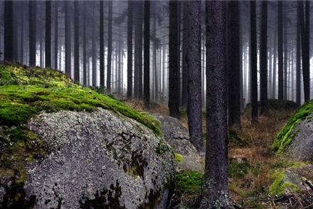
Αβροί κάτοικοι των δασών του εαυτού μας.
Supervielle
[download mp3: iava] | |
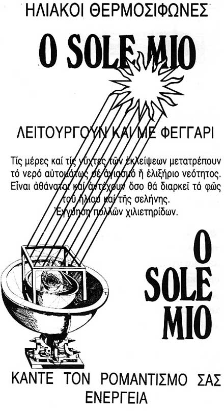
Από παλιό ημερολόγιο "χάρτης"
Το mp3 δεν είναι χαλασμένο, απλώς είναι experimental/νεοdada κ.λ.π.
[download mp3: manon_the_exchange] | |
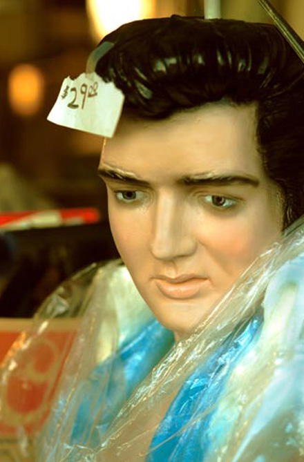
Ο τέλειος άνθρωπος για τους ειδωλολάτρες ήταν η τελειότητα του ανθρώπου.
Ο τέλειος άνθρωπος για τους χριστιανούς, η τελειότητα του ανθρώπου που δεν υπάρχει.
Ο τέλειος άνθρωπος για τους βουδιστές, η τελειότητα του να μην υπάρχει ο άνθρωπος.
Φερνάντο Πεσσόα.
[download mp3: boris_vian] | |
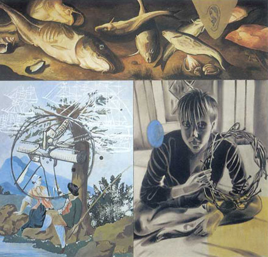
Δεν πιστεύω στο μεμονωμένο έργο. Νομίζω πώς τα έργα ορισμένων συγγραφέων συγκροτούν ένα όλο, όπου το κάθε ένα φωτίζεται από τα υπόλοιπα, και όπου όλα μεταξύ τους ανταλλάσσουν βλέμματα.
Άλμπερ Καμύ
[download mp3: glaxo_babies] | |
|
35 readers online
|